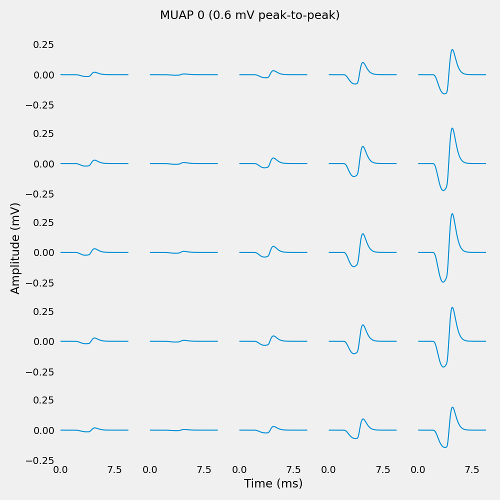
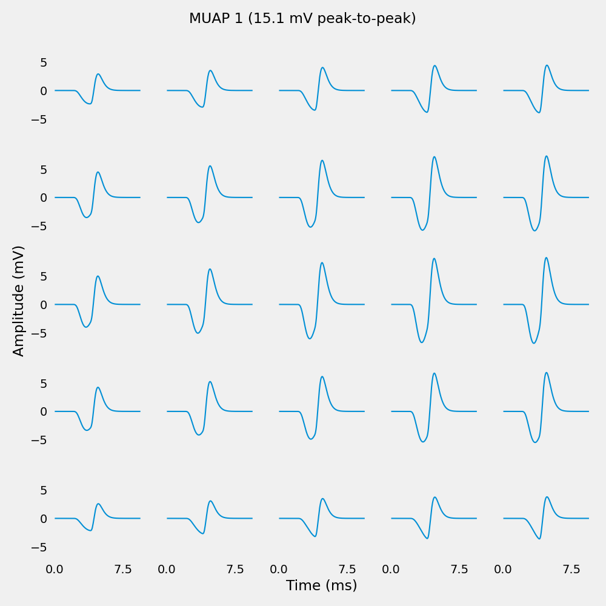
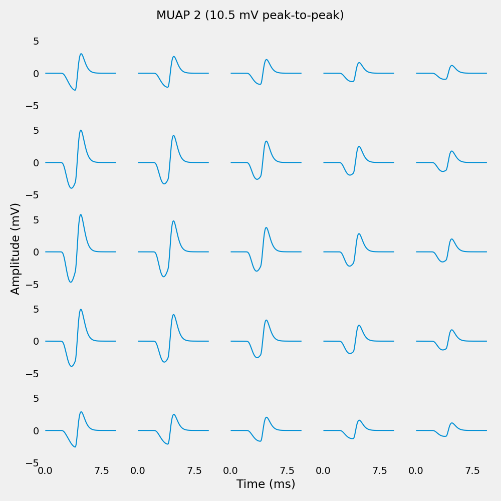
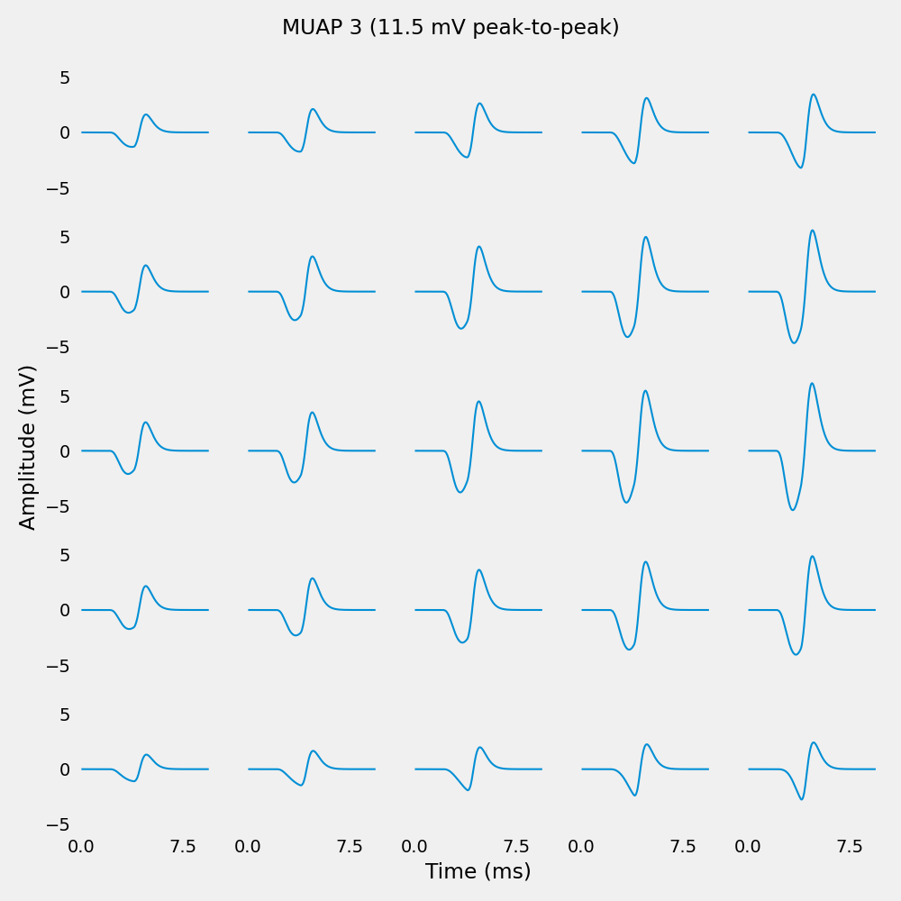

Note
Go to the end to download the full example code.
Surface Motor Unit Action Potentials#
After having created the muscle model, we can simulate the surface EMG by creating a surface EMG model.
First step is to create MUAPs from the muscle model.
from pathlib import Path
import joblib
import matplotlib.pyplot as plt
import numpy as np
import quantities as pq
from myogen import simulator
from myogen.utils.neo import signal_to_grid
plt.style.use("fivethirtyeight")
Define Parameters#
The surface EMG is created using the SurfaceEMG object.
The SurfaceEMG object takes the following parameters:
muscle_model: Muscle modelsampling_frequency: Sampling frequencyelectrode_grid_dimensions: Electrode grid dimensionsinter_electrode_distance: Inter-electrode distancefat_thickness: Fat thicknessskin_thickness: Skin thickness
# Define simulation parameters
sampling_frequency = 2048.0 * pq.Hz
Load Muscle Model#
Load muscle model from previous example
Create Surface EMG Model#
The SurfaceEMG object is initialized with the muscle model, the electrode array, and the simulation parameters.
Note
For simplicity, we only simulate the first motor unit. This can be changed by modifying the
MUs_to_simulateparameter.
This is to simulate the surface EMG from two different directions.
electrode_array_monopolar = simulator.SurfaceElectrodeArray(
num_rows=5,
num_cols=5,
inter_electrode_distance__mm=5 * pq.mm,
electrode_radius__mm=5 * pq.mm,
differentiation_mode="monopolar",
bending_radius__mm=muscle.radius__mm + muscle.skin_thickness__mm + muscle.fat_thickness__mm,
)
surface_emg = simulator.SurfaceEMG(
muscle_model=muscle,
electrode_arrays=[electrode_array_monopolar],
sampling_frequency__Hz=sampling_frequency,
sampling_points_in_t_and_z_domains=256,
sampling_points_in_theta_domain=32, # Restored to default (log-space Bessel implementation prevents overflow)
MUs_to_simulate=[0, 1, 2, 3], # Simulate MUs 0, 1, 2, and 3
# iap_kernel_length__mm=None, # Default: uses scaled fiber length (2.5× for boundary clearance)
# The IAP kernel is automatically scaled to 2.5× the mean fiber length to:
# 1. Prevent boundary truncation artifacts
# 2. Allow full IAP wavefront development and decay
# 3. Maintain proportionality to actual fiber lengths
# Result: Realistic MUAP durations (8-10 ms) independent of sampling resolution N!
)
Simulate MUAPs#
To generate the MUAPs, we need to run the simulate_muaps method of the SurfaceEMG object.
# Run simulation with progress output
muaps = surface_emg.simulate_muaps()
print("MUAP simulation completed!")
first_signal = muaps.groups[0].segments[0].analogsignals[0]
grid_shape = first_signal.annotations["grid_shape"]
print(f"Generated MUAPs shape: {first_signal.shape} (stored as 2D for NWB compatibility)")
print(f" - {len(muaps.groups[0].segments)} total motor units in muscle")
print(f" - {len(muscle.resulting_number_of_innervated_fibers)} MUs in muscle model")
print(f" - {grid_shape[0]} rows × {grid_shape[1]} columns electrode grid")
print(f" - {first_signal.shape[0]} time samples")
# Check fiber counts for the MUs we're simulating
print("\nFiber counts for simulated MUs:")
for mu_idx in range(95, min(100, len(muscle.resulting_number_of_innervated_fibers))):
n_fibers = muscle.resulting_number_of_innervated_fibers[mu_idx]
print(f" MU {mu_idx}: {n_fibers} fibers")
# Save results
joblib.dump(surface_emg, save_path / "surface_emg.pkl")
Electrode Array 1/1: 0%| | 0/4 [00:00<?, ?it/s]
Electrode Array 1/1: 25%|██▌ | 1/4 [00:28<01:24, 28.17s/it]/home/runner/work/MyoGen/MyoGen/.venv/lib/python3.12/site-packages/joblib/externals/loky/process_executor.py:782: UserWarning: A worker stopped while some jobs were given to the executor. This can be caused by a too short worker timeout or by a memory leak.
warnings.warn(
Electrode Array 1/1: 50%|█████ | 2/4 [00:50<00:49, 24.76s/it]
Electrode Array 1/1: 100%|██████████| 4/4 [00:53<00:00, 10.24s/it]
Electrode Array 1/1: 100%|██████████| 4/4 [00:53<00:00, 13.44s/it]
MUAP simulation completed!
Generated MUAPs shape: (256, 25) (stored as 2D for NWB compatibility)
- 100 total motor units in muscle
- 100 MUs in muscle model
- 5 rows × 5 columns electrode grid
- 256 time samples
Fiber counts for simulated MUs:
MU 95: 2392 fibers
MU 96: 2166 fibers
MU 97: 2626 fibers
MU 98: 2502 fibers
MU 99: 1921 fibers
['results/surface_emg.pkl']
Plot MUAPs#
Plot a single MUAP across the electrode grid. Each subplot shows the MUAP waveform at one electrode position.
# Select which MUAP to plot
for muap_index in range(len(muaps.groups[0].segments)):
if np.mean(muaps.groups[0].segments[muap_index].analogsignals[0]) == 0:
continue
# Extract MUAP data from the Block object
muap_signal = muaps.groups[0].segments[muap_index].analogsignals[0]
# Convert to 3D grid format (time, rows, cols)
muap_data_mV = signal_to_grid(muap_signal)
muap_data_uV = signal_to_grid(muap_signal.rescale(pq.uV)) # Convert to uV for plotting
# Print amplitude diagnostics
print(f"\nMUAP {muap_index} amplitude range:")
print(f"\tMin: {np.min(muap_data_mV):.6f} mV ({np.min(muap_data_uV):.2f} uV)")
print(f"\tMax: {np.max(muap_data_mV):.6f} mV ({np.max(muap_data_uV):.2f} uV)")
print(f"\tPeak-to-peak: {np.ptp(muap_data_mV):.6f} mV ({np.ptp(muap_data_uV):.2f} uV)")
# Get grid dimensions from annotations
n_rows, n_cols = muap_signal.annotations["grid_shape"]
# Create subplot grid matching electrode layout
fig, axs = plt.subplots(
n_rows, n_cols, figsize=(n_cols * 2, n_rows * 2), sharex=True, sharey=True
)
fig.suptitle(f"MUAP {muap_index} ({np.ptp(muap_data_mV):.1f} mV peak-to-peak)")
# get 100 ms around the center for better visualization (captures full MUAP waveform)
time_vector = muap_signal.times.rescale(pq.ms).magnitude
# Plot each electrode's waveform
for row in range(n_rows):
for col in range(n_cols):
axs[row, col].plot(
time_vector,
muap_data_mV[:, row, col],
linewidth=1.5,
)
axs[row, col].grid(False)
if row == n_rows - 1 and col == n_cols // 2:
axs[row, col].set_xticks([0, 7.5, 15])
axs[row, col].set_xlabel("Time (ms)")
if col == 0 and row == n_rows // 2:
axs[row, col].set_ylabel("Amplitude (mV)")
plt.tight_layout()
plt.show()




MUAP 0 amplitude range:
Min: -0.245851 mV (-245.85 uV)
Max: 0.320643 mV (320.64 uV)
Peak-to-peak: 0.566494 mV (566.49 uV)
MUAP 1 amplitude range:
Min: -6.868579 mV (-6868.58 uV)
Max: 8.275305 mV (8275.30 uV)
Peak-to-peak: 15.143884 mV (15143.88 uV)
MUAP 2 amplitude range:
Min: -4.703966 mV (-4703.97 uV)
Max: 5.765928 mV (5765.93 uV)
Peak-to-peak: 10.469893 mV (10469.89 uV)
MUAP 3 amplitude range:
Min: -5.394776 mV (-5394.78 uV)
Max: 6.135689 mV (6135.69 uV)
Peak-to-peak: 11.530465 mV (11530.47 uV)
Total running time of the script: (0 minutes 56.776 seconds)